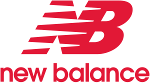
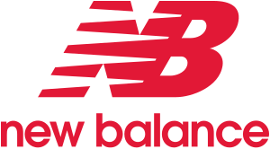
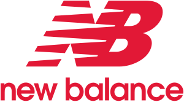
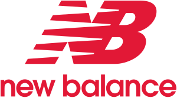

En Zalando, Privé by Zalando y Outlets (colectivamente referidas como «nosotros») empleamos cookies y otras tecnologías con el fin de asegurar la fiabilidad y seguridad de nuestras páginas, optimizar su rendimiento y ofrecerte una experiencia de compra y publicidad realmente personalizada. Para ello, recopilamos información sobre ti, tu comportamiento en línea y el dispositivo que utilizas. Si seleccionas «Estoy de acuerdo», nos otorgas tu consentimiento para compartir esta información con terceros, incluidos nuestros socios de marketing, lo que podría implicar el procesamiento de tus datos en EE. UU. y China. Si prefieres «Solo las esenciales», utilizaremos únicamente las cookies imprescindibles y no disfrutarás de anuncios personalizados. Selecciona «Establecer preferencias» para obtener más detalles y gestionar tus opciones. Puedes modificar tu elección en cualquier momento. Para más información, consulta nuestra Política de privacidad y nuestro Aviso legal.
Zapatillas de running con la máxima amortiguación: mejora tu rendimiento con una tecnología pionera Descubre la increíble comodidad de las zapatillas de running Nike con amortiguación de calidad profesional. Las suelas de espuma elástica aumentan el rebote y facilitan el movimiento kilómetro tras kilómetro. Además, la amortiguación superior reduce el impacto en las articulaciones, por lo que puedes entrenar con más intensidad durante más tiempo. Si buscas un par con gran capacidad de respuesta, las opciones con espuma ReactX ofrecen un retorno de energía aún mayor que la anterior tecnología Nike React y te ayudan a rendir como nunca. ¿Corres en asfalto? Las zapatillas amortiguadas de running con suela exterior tipo gofre proporcionan una tracción duradera que te permite tener el control en todo momento. Como nuestras zapatillas de running con amortiguación máxima están elaboradas con materiales que no pesan, no habrá nada que te frene para alcanzar tus metas. La espuma ultraligera y la parte superior de tejido Flyknit apenas se notan, pero contribuyen a mejorar tu rendimiento. Si entrenas bajo la lluvia, los pares con membrana resistente al agua mantienen los pies secos. Y si hace calor, apuesta por unas zapatillas de running con amortiguación y paneles de malla transpirable, ya que te proporcionan frescura hasta la línea de meta. Para mayor comodidad, la zona del tobillo y la lengüeta acolchadas se ajustan perfectamente al pie y mantienen la zapatilla en su sitio. Acompáñanos en nuestra carrera más importante: Move to Zero de Nike es nuestro compromiso hacia un futuro con cero huella de carbono y cero residuos. Si quieres colaborar, elige unas zapatillas de running con la máxima amortiguación y que lleven la etiqueta de Materiales sostenibles. Significa que están fabricadas con al menos un 20 % de contenido reciclado. Los materiales provienen de restos de poliéster, botellas de plástico, alfombras desechadas y redes de pesca recuperados de vertederos. Es solo una de las formas en que contribuimos a proteger el futuro del deporte.